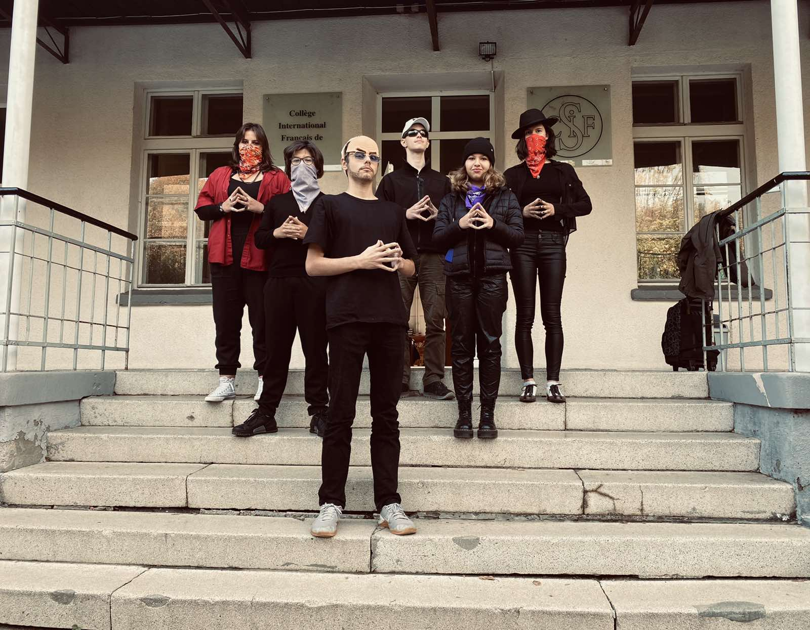
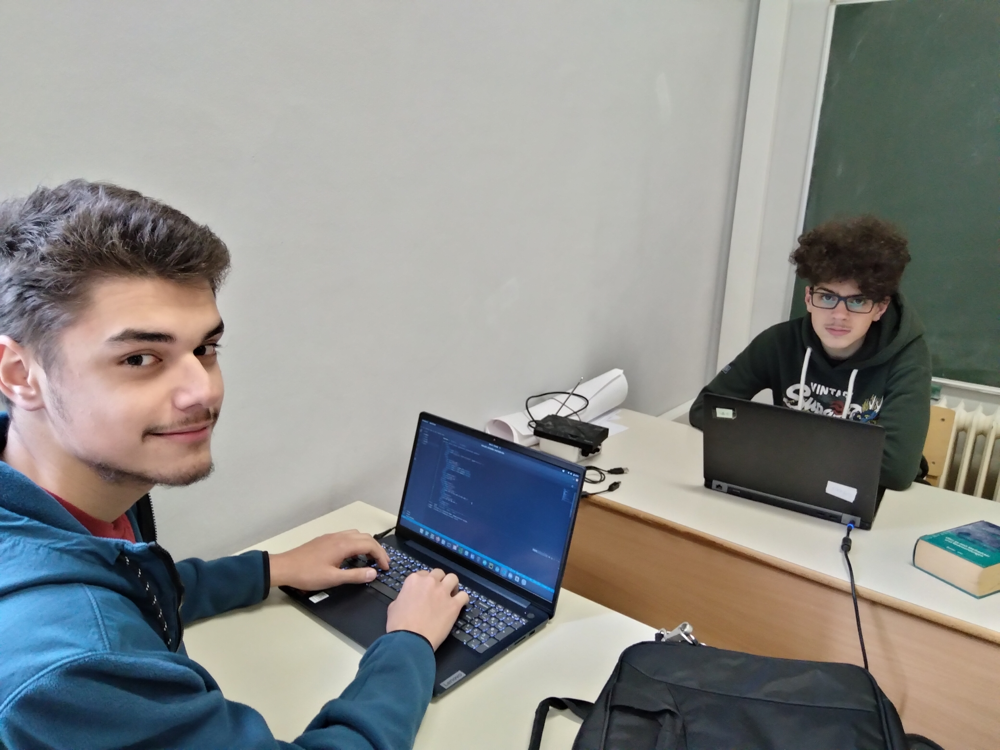

Notre Classe!


En SNT!
La seconde à Cifs!
Pas de BAC en seconde!
Pas de brevet en seconde!
Les sciences
La SNT!
En cours de SNT avec Mme Natalia Pusic
Themes étudiés en SNT:
-Internet
-Les Réseaux sociaux
-Les données sructurées
- Localisation , cartographie et mobilité
- Informatique embarquée et objets connectés